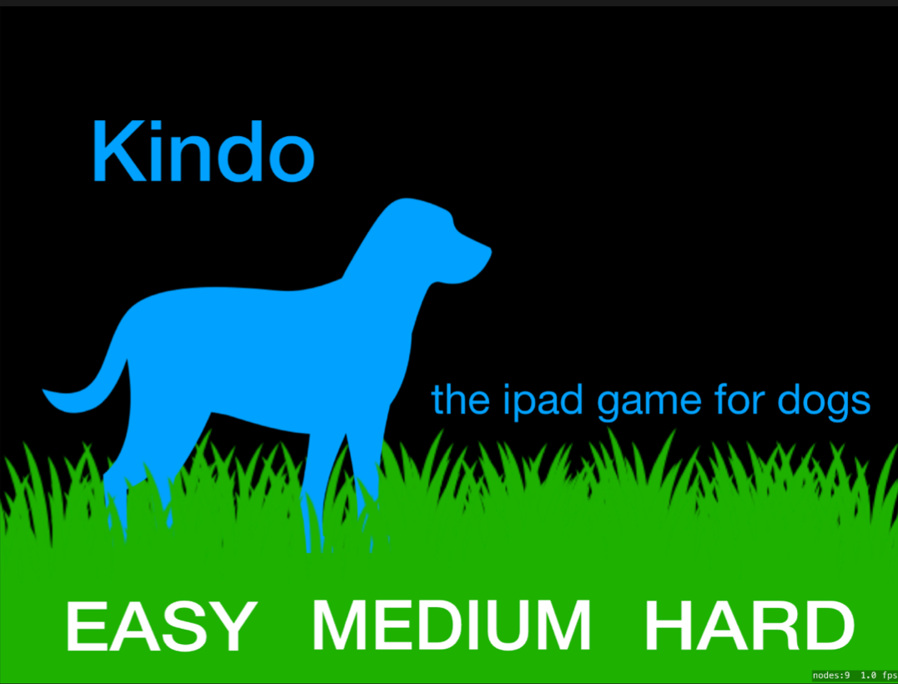
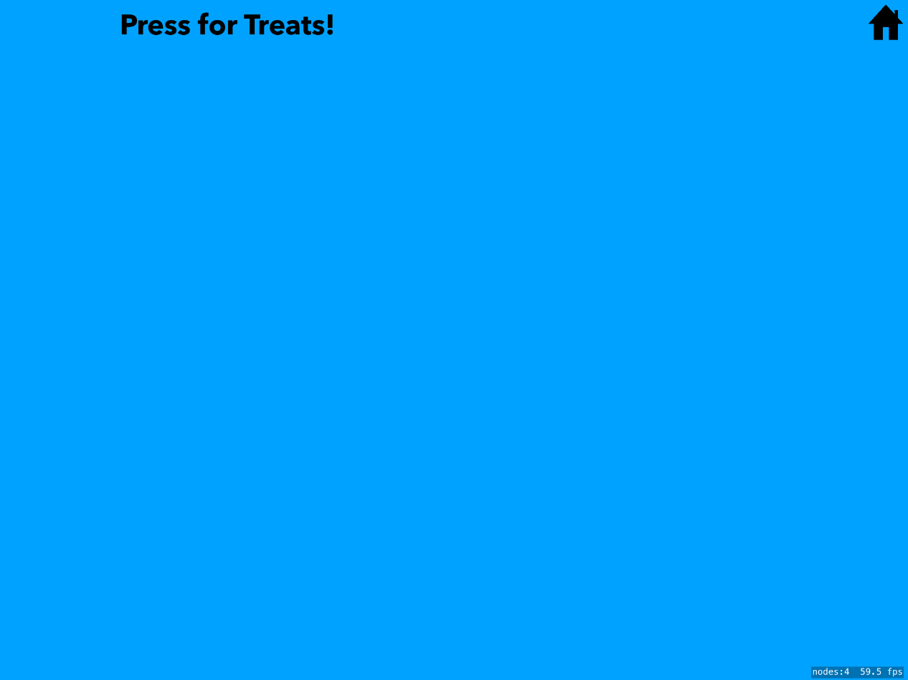
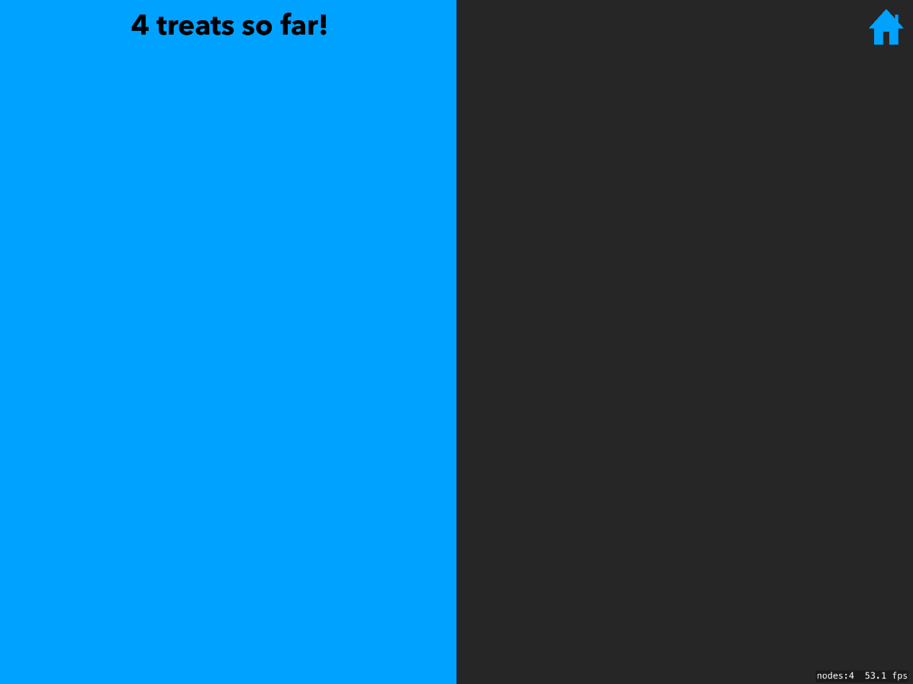
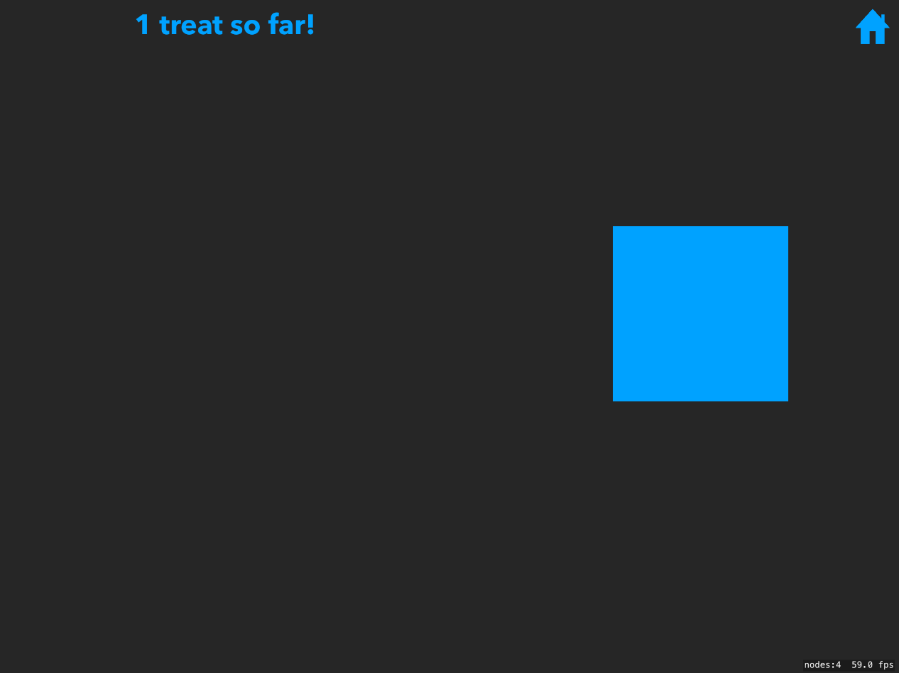

What is the goal of this project?
The goal of this project was to make a treat dispenser that is triggered by a dog pressing on the screen of a tablet.
Context
I wanted to learn some Swift and had already messed around with Arduino so this seemed like a good project to test them both out.
What tools did I use?
I wrote the program for iPad using Swift, and the treat dispenser is controled by an Arduino.
Introduction
I often feel bad that I'm not properly educating my dog, teaching him letters and numbers and shapes and colors. Hopefully this project will change that! At the moment, the game dispenses treats when the dog/cat/werewolf hits the blue button on an iDevice's screen.
You can see it in action below:
The Game
|  |  |  |  |
|---|---|---|---|
| |
|
|
|
Next Steps
The program is still in its infancy and there are a lot of improvements I want to make
- Add a dog-proof way to exit the game, like a twisting gesture, so he can't accidentally hit the exit button
- Keep track of data and display progress in a chart
- Add dificulty settlings that change the size of the box or move its location
- Introduce distractions like other colored boxes, or blue circles and triangles
- Create a new game that rewards the dog for picking the right letter, or hitting boxes in the right order
Learning Swift
This was my first iOS project so there was a very steep learning curve. Xcode, the IDE for designing iOS apps, as well as Swift, the programming language, were not very learner-friendly. A lot went into every small step, from getting a sound to play, to switching into and out of the games, to just getting the program to run on my phone. And getting it onto the iPad was another adventure.
Despite the high levels of frustruation, I'm glad I undertook this
project. The skills to program in Swift are
Plus, this is the first useful program I've made. It's rewarding to see Gandalf get excited when I show him the blue screen, and also to see his sad face when he realizes play time is over.